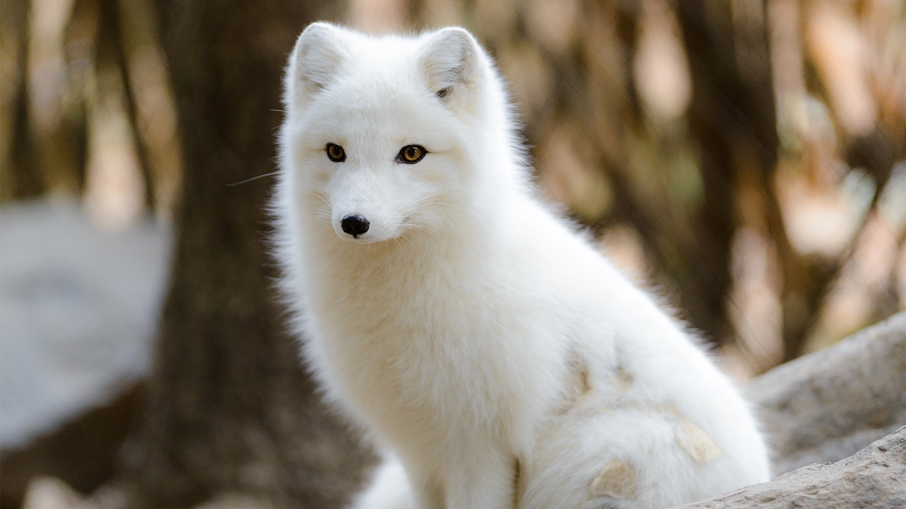

Песе́ц
Песе́ц, или полярная лисица (лат. Vulpes lagopus, [syn. Alopex lagopus] от др.-греч. ἀλώπηξ «лисица» и λᾰγώπους «зайценогая») — вид хищных млекопитающих семейства псовых, обычно относимый к роду лисиц (иногда выделяется в отдельный род Alopex).
Небольшой хищник, по виду напоминающий лису. Длина тела составляет 46,5—73 см, длина хвоста около 25—52 см. Масса составляет 2—8,8 кг. Тело удлинённое, хвост составляет около половины длины тела, у стоящего животного достигает земли. Голова вытянутая. Уши широко расставленные, длинные, но слабо выступающие из зимнего меха, вершины ушей закруглённые.
В природе живёт в среднем 3—4 года.